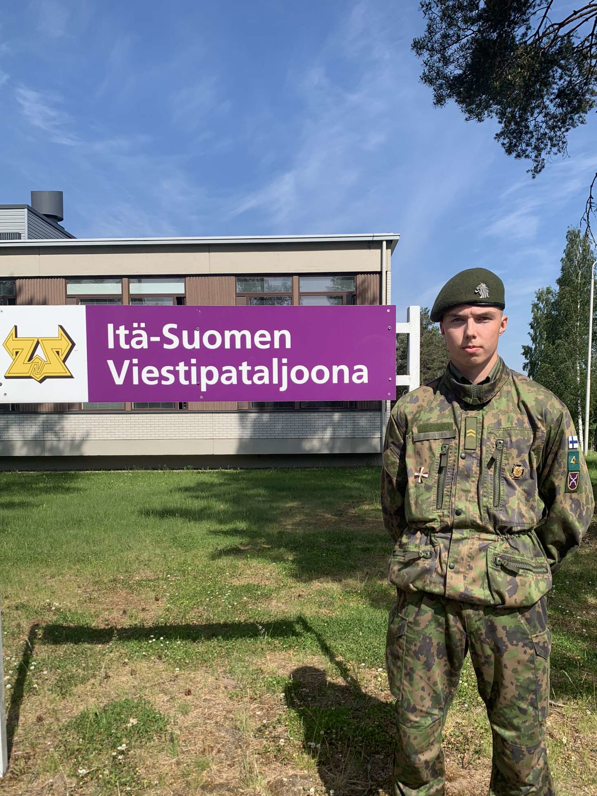
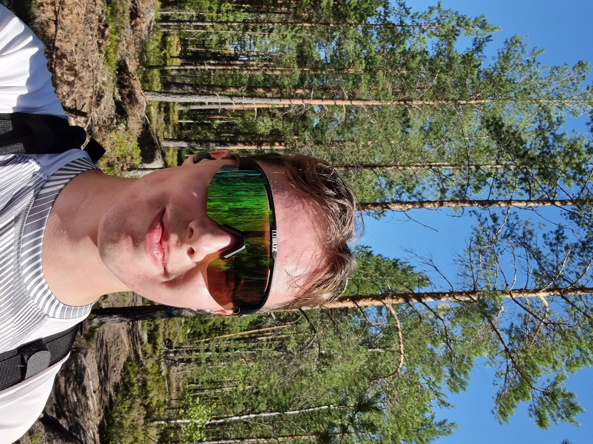
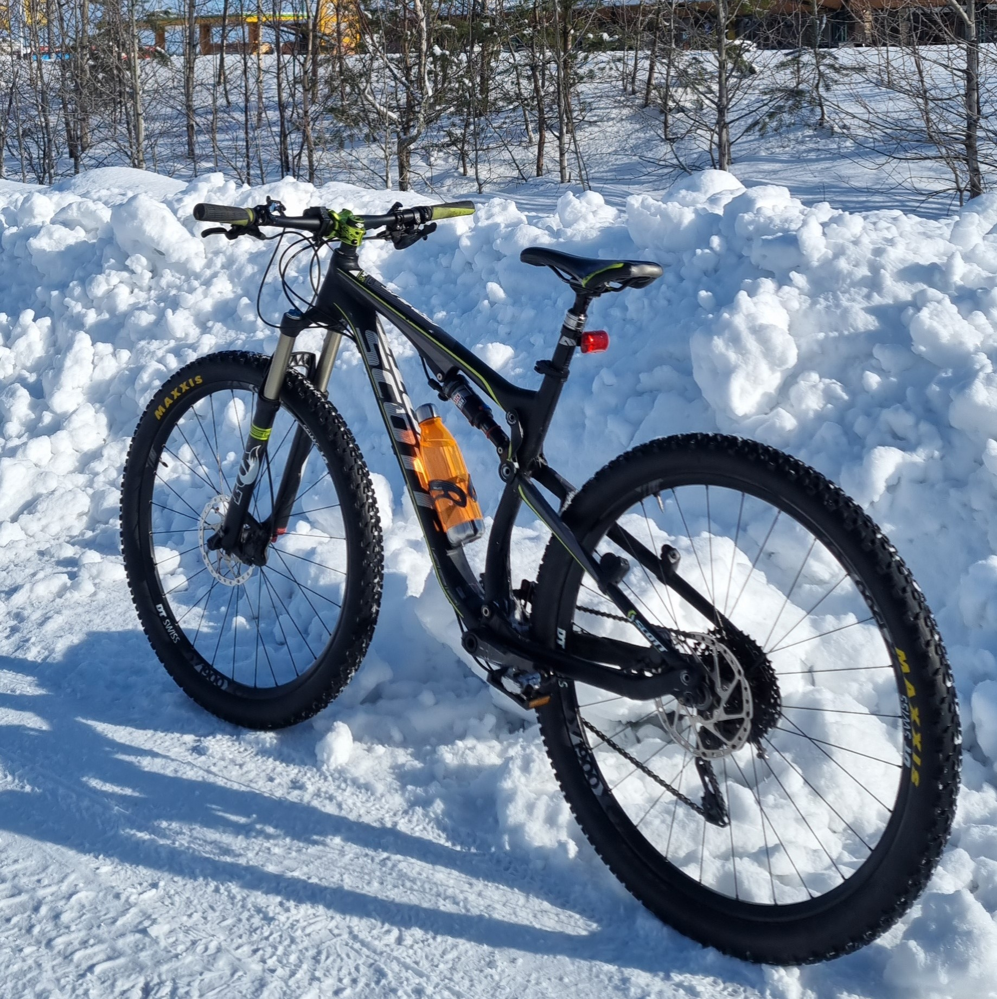
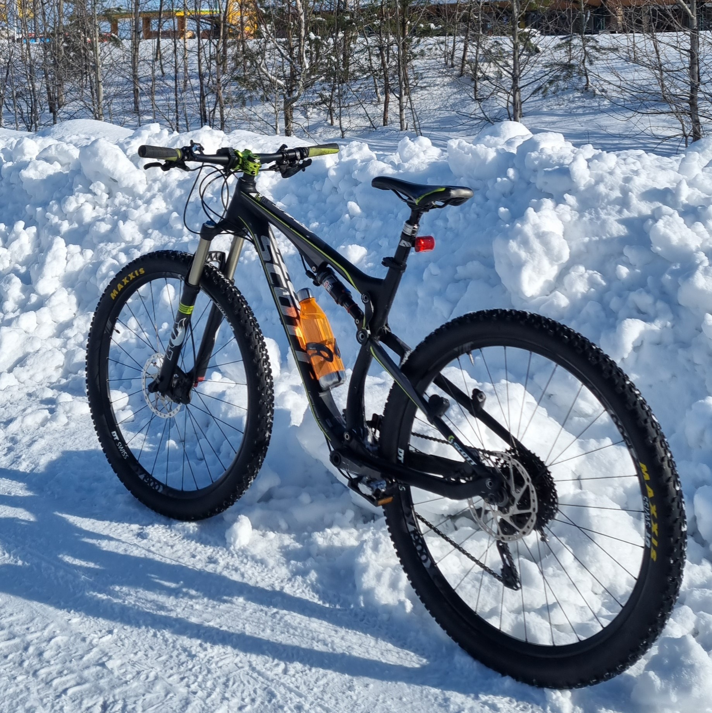
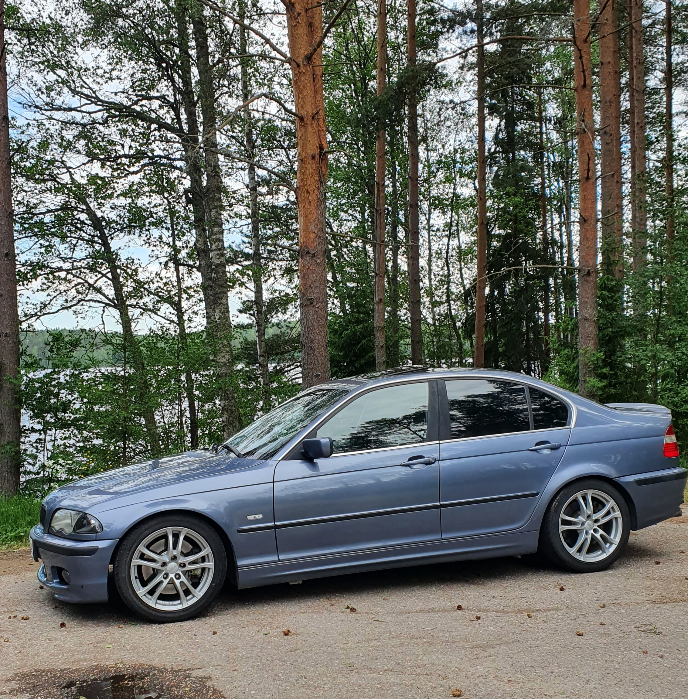
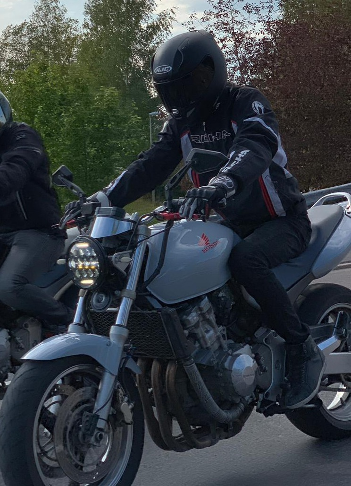

Who am I?
Motivated, cheery and determited ICT-engineer student with a good amount of hands-on work experience! Always open and seeking new challenges.
22 years old, originally from Kouvola. Now studying at Jamk University of Applied Sciences in the beautiful city of Jyväskylä.
Dive right into my page and learn more about me!
Portfolio
My goal is to graduate in the spring of 2026. I will strengthen my previous knowledge and gain many more skills one the way to becoming an engineer.
Working experience and education
I have had summerjobs during middle school on the "general" side, but my most significant work has been at Viafin GAS, my current empoyler.
2020-, Automatic/ICT-installer, Viafin GAS Oy
Finnish gas transmission IT-network maintenance, develop and improvement.
Been learning widely of data communication technologies and devices such as radio networks, mobile routers, switches, small data centers, VPN-tunnels, Linux-systems and the list goes on to more specific devices, like substations that communicate via RS-232 or modbus.
My main focus in our team has been switched from an installer to a technician, doing more of the configuration side of things."
LinkedIn Bio
August 2022-, ICT-engineer student, JAMK IT-institute
Only one and a half years behind, and I have already gotten much valuable experience and knowledge. Here are some of my personal strenghts and topics I want to get better at:
Linux
Cloud and OPS
Networks
VPN
2021, Military service
Did my military service in 2021, where I completed group leader course and specialized in radio- and telecommunications.
Hobbies
I've always liked a variety of sports. At the moment my favorite things to do are cycling, running, all kinds of ball games and gym.
Mountain biking
This summer mountain biking was easily my favourite free time activity. I clocked atleast one thousand kilometers in the woods around my home place Kouvola.
My bike is Scott Genius 940, here are some pictures of it:
 

Motor vehicles
Since I was fifteen and got my first moped, I have loved tweaking and going with cars and motorcycles.
As a car I have at the moment a 2001 BMW 330i. My last motorcycle was Honda CB 600f Hornet, but unfortunately I had to sell it before military service. I hope I'll be able to get some fun thing that goes with two wheels in the future!
 